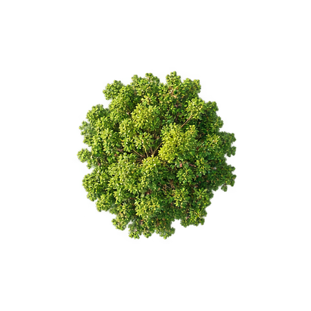
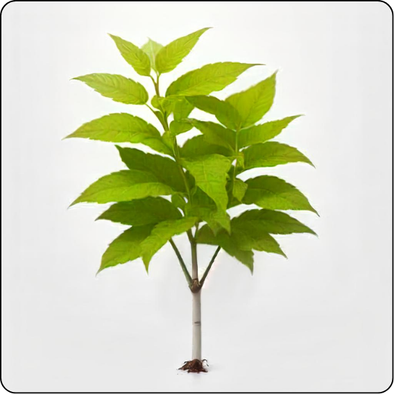
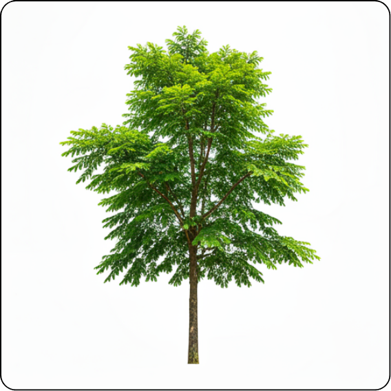

Grow a language
you won't forget.
Studied it already—so why do you keep forgetting it? A word is fragile when you first meet it. Recall it at the right moment, and its roots grow deeper every time.
More reviews are not always better.
A nine-year vocabulary study compared different review schedules. Thirteen sessions spaced 56 days apart produced retention comparable to 26 sessions spaced 14 days apart. The longer schedule took more patience, but only half as many review sessions.
Read the vocabulary study ↗½ the sessionswith comparable retention
Review before the trail disappears.
I used spaced repetition to manage more than 20,000 words across 11 languages. I logged them in a flashcard app so the number was measurable and I stayed accountable. The idea is simple: test yourself after longer and longer gaps instead of rereading everything in one sitting.
New knowledge is a sapling. It needs attention soon. If you wait too long, recall collapses; if you review constantly, you spend time on words that are already stable.
Retrieval is the work. Seeing the answer is not the same as producing it. Try to remember first, then reveal the answer and schedule the next encounter.
Cramming grows fast, then fades. It can feel solid at first, but the memory is still weak. The goal is not merely to know something today; it is to retrieve it after the gap widens.
Mature knowledge stands alone. After enough successful recalls, the memory can survive a much longer interval—like a rooted tree that no longer needs daily watering.
Watch a memory take root.
This is the whole system in motion: one new word, five well-timed returns, and longer gaps as recall becomes stronger.
What if you never return?
After a week of review, the memory is stronger—but it is still a sapling. Miss the next returns and its route back becomes quieter, slower, and harder to find.
What if you return late?
Missing Day 10 does not kill the memory. Review it on Day 11, shorten the next interval, and the sapling can recover.
One tree becomes a forest.
A single word feels small. Repeat the same review cycle across months and the real scale of a working vocabulary only becomes visible from above.
Representative canopy · the crowns show scale, not a literal one-tree-per-word count.
One memory, three stages.
A new word needs frequent care; a mature memory can survive a much longer interval.


Four moves. No ritual.
You can use paper cards or a spaced-repetition app such as Anki or Migaku. An app can schedule the intervals automatically; the part you cannot automate is honest recall.
- 01
Capture context
Turn a new word or grammar rule into a card using the sentence, audio, or situation where you found it.
- 02
Recall first
Review it the next day. Hide the answer and retrieve the meaning, sound, or sentence before checking.
- 03
Extend success
If you remember it without a hint, let the card return after three days, then a week, then a month.
- 04
Shorten failure
If you forget it, return to a shorter interval. That is not failure; it is the signal that this memory needs more frequent care.
Fluency is not one giant breakthrough. It is a forest built from thousands of small returns.